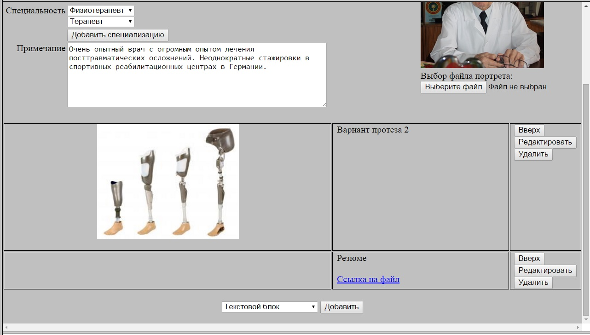
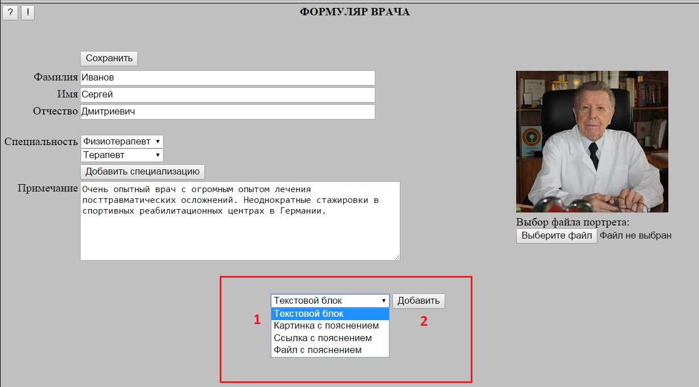
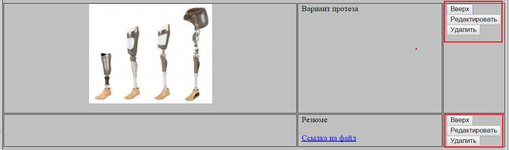
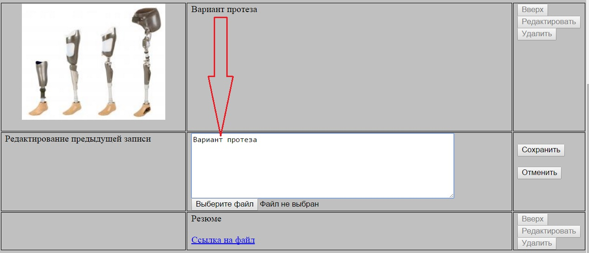
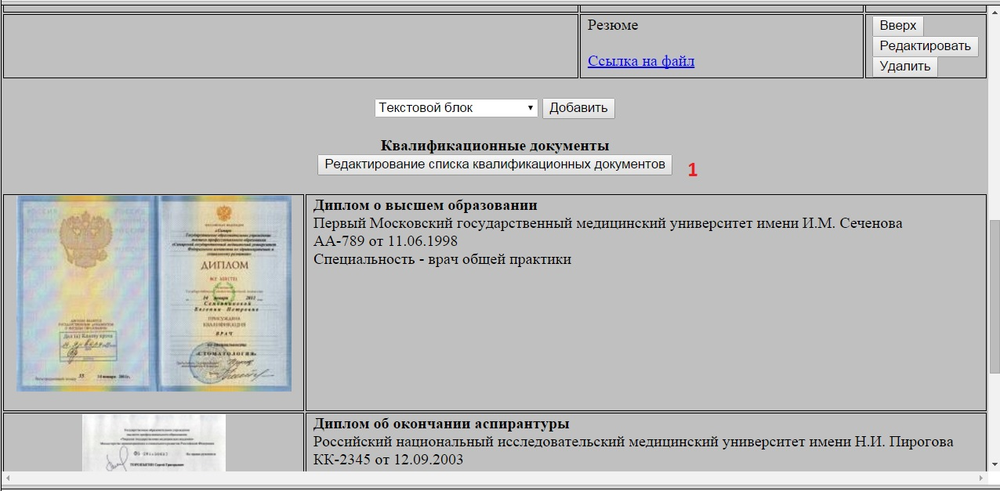
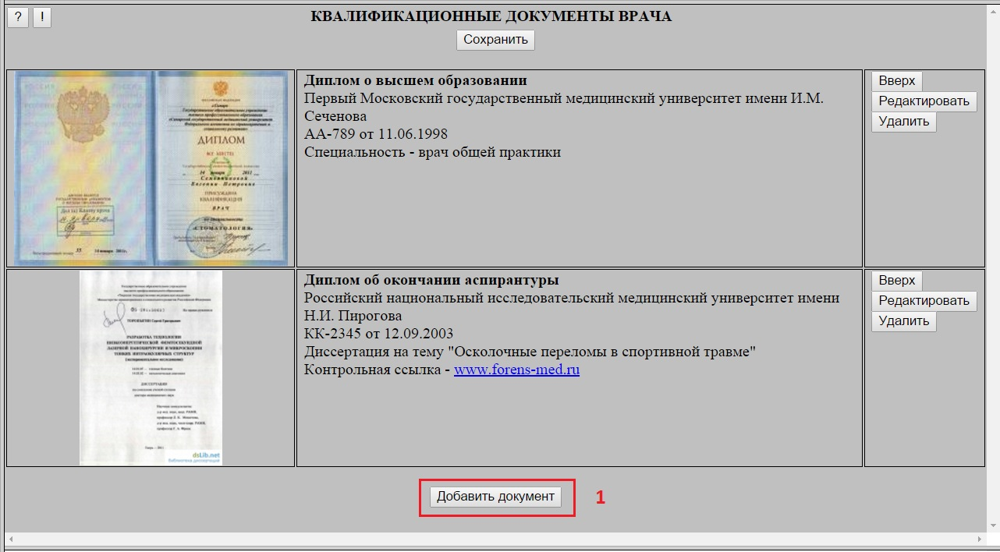
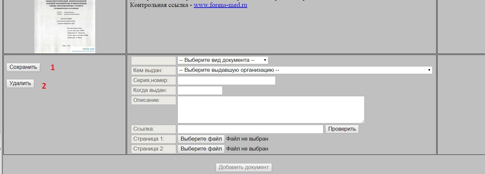
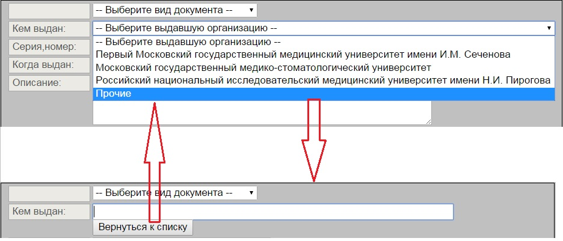
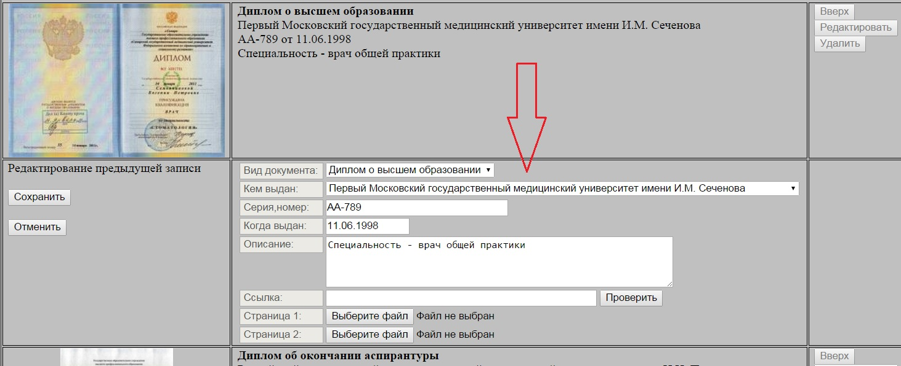
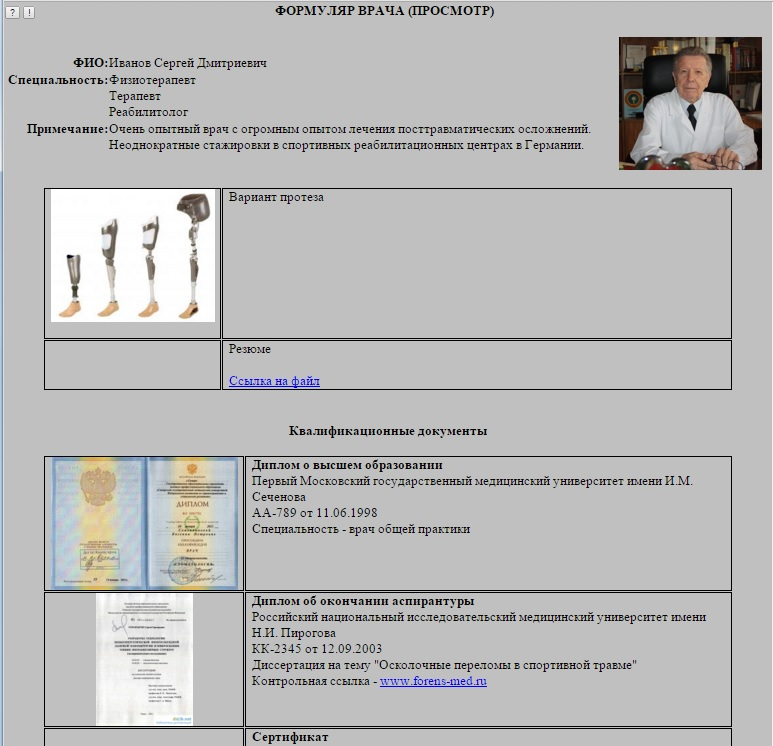

В Формуляре врача появилась возможность добавлять (и редактировать) дополнительные блоки с текстовой информацией,
картинками, ссылками и прикрепленными файлами:

Для создания нового дополнительного блока необходимо в нижней части Формуляра выбрать тип блока (1), после чего нажать кнопку "Добавить" (2).
В конец набора блоков будет добавлен новый блок в котором можно заполнить текстовой комментарий и, в зависимости, от типа блока указать
файл картинки, ссылку или прикладываемый файл.

С уже существующими блоками можно с помощью расположенных в правой колонке кнопок выполнить одно из следующих действий:
Удалить блок (кнопка "Удалить")
Переместить на одну позицию вверх (кнопка "Вверх")
Редактировать блок (кнопка "Редактировать")

При нажатии кнопки "Редактировать" под исправляемым блоком появляется форма редактирования, в которой можно поменять комментарий
и/или задать новый объект (файл картинки, ссылку и так далее). В случае, если новый объект не задан - используется ранее заданный.

Все изменения на форме (удаление и перемещение блоков, создание и редактирование блока) фиксируются нажатием кнопки "Сохранить".
При этом после входа в режим создания или редактирования блока любые действия до выполнения сохранения (или отмены создания/редактирования) блокируются.
При клике на картинку - она раскрывается в полном размере в соседней вкладке.
При клике на файл - его загрузка начнется в соседней вкладке.
При клике на ссылку - соответствующий ресурс открывается в соседней вкладке.
Квалификационные документы в Формуляре врача
В Формуляре врача появился раздел "Квалификационные документы", располагающийся в нижней части формы под дополнительными информационными блоками.
Для редактирования списка квалификационных документов необходимо перейти в специальную форму (кнопка (1)):

Для добавления документа необходимо кликнуть кнопку "Добавить" (1) в нижней части формы:

В конец списка документов будет добавлен новый блок, в котором необходимо заполнить нужные поля,
после чего нажать кнопку "Сохранить" (1) или аналогичную кнопку в верхней части формы.
Для отмены добавления нового блока необходимо нажать кнопку "Удалить" (2).

В исходном состоянии поля "Вид документа" и "Кем выдан" представлены в виде списка значений.
При выборе значения "Прочее" список заменяется полем свободного ввода с кнопкой "Вернуться к списку".
При нажатии на кнопку "Вернуться к списку" поле свободного ввода снова заменяется списком значений.

С документами, уже входящими в список квалификационных документов, можно с помощью расположенных в правой колонке кнопок выполнить одно из следующих действий:
Удалить документ (кнопка "Удалить")
Переместить на одну позицию вверх (кнопка "Вверх")
При нажатии кнопки "Редактировать" под исправляемым блоком появляется форма редактирования, в которой можно поменять поля описания документа
и/или задать новую ссылку или файл картинки. В случае, если новая ссылка/картинка не задана - используется ранее заданная.

Все изменения на форме (удаление и перемещение документов по списку, создание и редактирование документа) фиксируются нажатием кнопки "Сохранить".
При этом после входа в режим создания или редактирования документа любые действия до выполнения сохранения (или отмены создания/редактирования) блокируются.
При клике на картинку - она раскрывается в полном размере в соседней вкладке.
При клике на ссылку - соответствующий ресурс открывается в соседней вкладке.
Расширенный вид Формуляра врача для пациентов
Пациентам при просмотре Формуляра врача (например, по кнопке "Кто это?" в различных формах) он теперь представляется в расшеренном виде -
кроме титульных полей отображаются дополнительные информационные блоками (включая файлы и картинки),
а также квалификационные документы:

При клике на картинку - она раскрывается в полном размере в соседней вкладке.
При клике на файл - его загрузка начнется в соседней вкладке.
При клике на ссылку - соответствующий ресурс открывается в соседней вкладке.